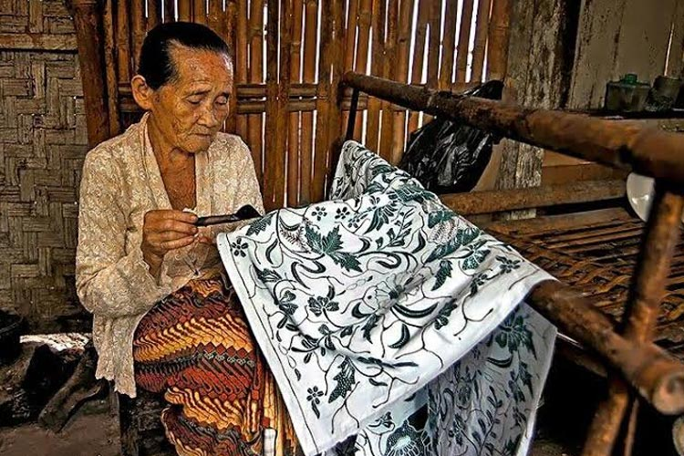
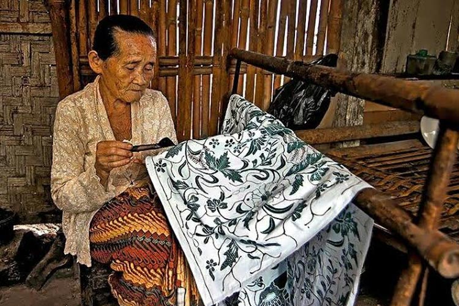

Proses perencanaan kami dimulai dengan tahap penelitian yang mendalam tentang kain batik. Mengintegrasikan kain batik dalam produk kami merupakan langkah yang sangat tepat karena batik merupakan salah satu warisan budaya Indonesia yang diakui oleh UNESCO sebagai Warisan Budaya Takbenda pada tahun 2009. Kain batik tidak hanya mencerminkan keindahan seni tradisional, tetapi juga merupakan lambang keberagaman budaya dan sejarah bangsa Indonesia. Batik memiliki sejarah panjang yang mencerminkan nilai-nilai dan filosofi lokal melalui motif-motifnya yang unik, yang masing-masing memiliki makna dan simbolisme tersendiri. Dengan menggunakan batik, produk kami dapat mengedukasi masyarakat tentang keanekaragaman budaya Indonesia sekaligus memperkenalkan dan melestarikan teknik serta desain yang telah diwariskan turun-temurun. Selain itu, dengan memadukan elemen modern dalam desain produk kami, kami dapat menjaga relevansi batik di era kontemporer tanpa menghilangkan keasliannya. Jadi, selain dapat menunjukkan kualitas dan kreativitas produk kami, kami juga menghargai dan melestarikan warisan budaya yang berharga. Penelitian ini mencakup beberapa elemen kunci yang menjadi dasar dalam pengembangan produk kami:
Setelah melakukan penelitian, kelompok kami berdiskusi untuk mengevaluasi hasil penelitian dan mengembangkan ide inovatif untuk proyek kami. Diskusi mencakup beberapa aspek penting yaitu:
Dalam proyek ini, kami ingin menghadirkan tote bag yang tidak hanya berfungsi sebagai tas serbaguna, tetapi juga memiliki nilai budaya dan edukatif. Awalnya, kami berencana membuat tote bag dengan kain batik sebagai elemen utama desain. Namun, setelah melakukan evaluasi lebih lanjut, kami menyadari bahwa sekadar menggunakan batik sebagai motif utama belum cukup untuk memberikan pemahaman mendalam kepada masyarakat mengenai budaya-Indonesia. Kami ingin produk yang kami buat tidak hanya menarik secara visual, tetapi juga memberikan wawasan tentang kekayaan budaya yang terkandung dalam setiap motif batik. Untuk itu, kami memutuskan untuk menambahkan kartu edukasi dalam setiap tote bag yang kami produksi. Kartu ini berisi informasi tentang motif batik yang digunakan, termasuk sejarah, filosofi, serta makna yang terkandung di dalamnya. Dengan cara ini, kami berharap setiap pembeli tidak hanya menggunakan tote bag sebagai barang sehari-hari tetapi juga mendapatkan wawasan tambahan mengenai seni dan budaya Indonesia.
Setelah mengevaluasi berbagai jenis motif batik yang ada di Indonesia, kami memilih motif Sekar Jagad sebagai desain utama tote bag ini. Motif Sekar Jagad merupakan salah satu motif batik yang memiliki makna mendalam, yaitu menggambarkan keindahan dunia yang penuh dengan keberagaman. Kata “Sekar” berarti bunga, sementara “Jagad” berarti dunia, sehingga motif ini dapat diartikan sebagai keindahan dunia yang penuh dengan warna dan kehidupan. Lebih dari sekadar keindahan visual, motif Sekar Jagad juga melambangkan harmoni dan toleransi antarbudaya. Pola yang menyerupai peta pada motif ini menggambarkan bagaimana setiap elemen dalam dunia ini saling terhubung dan berdampingan dengan indah. Kami merasa bahwa pesan ini sangat relevan dengan kondisi masyarakat saat ini, di mana toleransi dan keberagaman menjadi nilai yang harus dijaga. Oleh karena itu, kami memilih motif Sekar Jagad untuk tote bag ini agar dapat menyampaikan pesan kebersamaan, persatuan, dan saling menghargai perbedaan.
Untuk semakin memperkaya unsur edukasi dalam produk ini, kami juga menambahkan stiker kecil dengan ilustrasi berbagai unsur budaya Indonesia. Stiker-stiker ini tidak hanya berfungsi sebagai hiasan tambahan, tetapi juga sebagai cara untuk memperkenalkan lebih banyak aspek budaya Indonesia kepada masyarakat. Beberapa unsur budaya yang kami ilustrasikan dalam bentuk stiker meliputi, Bunga raflesia sebagai salah satu bunga terbesar di dunia yang hanya tumbuh di Indonesia, Monas (Monumen Nasional) sebagai ikon kebanggan Indonesia yang menjadi simbol perjuangan kemerdekaan, Candi Borobudur sebagai simbol sejarah yang mencerminkan kejayaan perbedaaan Nusantara, Tugu Yogyakarta sebagai simbol perjuangan dan identitas kota-kota di Indonesia, Lutung sebagai satwa endemik yang menjadi bagian dari kekayaan fauna Indonesia, Sate sebagai salah satu kuliner khas Indonesia yang terkenal di dunia. Dengan adanya stiker-stiker ini, kami ingin memberikan pengalaman yang lebih menyenangkan bagi pembeli, sekaligus memperkenalkan lebih banyak elemen budaya secara kreatif. Harapannya, produk ini tidak hanya berfungsi sebagai tas belanja atau tas sehari-hari, tetapi juga menjadi media edukasi yang dapat meningkatkan kesadaran masyarakat tentang keunikan budaya Indonesia.
Melalui proyek ini, kami berupaya menciptakan produk yang memiliki nilai lebih dari sekadar fungsi estetika. Dengan menggabungkan motif Batik Sekar Jagad, kartu edukasi, dan stiker budaya, kami ingin menghadirkan tote bag yang tidak hanya cantik dan fungsional, tetapi juga memiliki peran mendalam tentang pentingnya melestarikan budaya Indonesia. Kami berharap produk ini dapat memberikan manfaat tidak hanya bagi pengguna, tetapi juga bagi upaya pelestarian warisan budaya yang harus berkembang di Indonesia.
Nama produk: Tote bag Batik Sekar Jagad, Setelah mempertimbangkan berbagai opsi, kelompok kami memutuskan untuk membuat tote bag sebagai produk akhir. Berikut adalah alasan di balik keputusan ini:
Kami merancang tote bag dengan kain batik sebagai elemen utama. Motif batik yang kami pilih adalah Sekar Jagad, yang berasal dari Solo dan Yogyakarta. Batik ini memiliki makna mendalam tentang keberagaman dan kesatuan, sehingga tote bag ini tidak hanya berfungsi sebagai barang fungsional, tetapi juga sebagai media edukatif dalam memperkenalkan budaya dan menimbulkan rasa toleransi.
Beberapa elemen yang kami pertimbangkan adalah
Batik Sekar Jagad merupakan motif batik yang memiliki makna simbolis mendalam yang mencerminkan peta dunia dengan keindahan, keragaman, dan kekayaan budaya. Nama “Sekar Jagad” berasal dari bahasa Jawa, “sekar” berarti bunga dan “Jagad” berarti dunia. Gabungan kedua kata tersebut mewakili gagasan bahwa batik merupakan representasi visual dari keindahan dan keanekaragaman yang terdapat di seluruh dunia, ibarat bunga yang menghiasi bumi. Batik Sekar Jagad juga mengandung pesan tentang kearifan lokal yang terbuka terhadap pengaruh global. Motif ini menggambarkan bagaimana budaya lokal dapat mengintegrasikan berbagai pengaruh dari luar tanpa kehilangan identitasnya. Dari sini, terbukti bahwa budaya lokal mampu beradaptasi dan berkembang sambil tetap mempertahankan nilai-nilai inti mereka.
Dengan demikian, melalui batik Sekar Jagad yang kaya akan simbolisme dan keindahan, kita dapat terdorong untuk menghargai keberagaman yang ada di dunia dan merayakan harmoni dalam perbedaan. Motifnya yang menyerupai peta dunia dengan berbagai elemen yang saling melengkapi, menyampaikan pesan persatuan dan penghormatan terhadap keberagaman, mengajarkan kita pentingnya memahami dan menghargai keindahan perbedaan serta perpaduan berbagai unsur menjadi harmonis. Melalui motif Sekar Jagad, kami berharap pelanggan dapat merasakan dan memahami bahwa keberagaman Indonesia adalah sebuah keindahan yang patut dirayakan.
Untuk memastikan tote bag kami memiliki tampilan yang menarik sekaligus fungsional, berikut beberapa detail yang kami terapkan dalam desain :
Kami merencanakan langkah-langkah pembuatan tote bag batik dengan berdiskusi bersama dan mencari cara dari internet. Langkah-langkah dalam pembuatan tote bag batik meliputi:
Kami menyusun materi edukasi yang akan disertakan dalam tote bag, meliputi:
| Tahap Perencanaan | Deskripsi Kegiatan | Tanggal Mulai | Tanggal Selesai | Hasil yang dicapai | Catatan |
|---|---|---|---|---|---|
| Penelitian Awal produk budaya | Riset tentang produk budaya yang ingin dibuat (misal: sejarah, makna budaya). Mengumpulkan informasi dari berbagai sumber (buku, internet, wawancara) | Kamis, 1/8/2024 | Jumat, 2/8/2024 | Rencana untuk membuat tote bag dengan aksen dari kain batik, serta menyediakan semacam panduan untuk edukasi mengenai kain batik yang digunakan dalam tote bag, mencari mengenai sejarah, makna, beragam motif dari batik. | - |
| Diskusi Produk budaya | Diskusi hasil penelitian. Pemilihan produk budaya yang akan dibuat. Menentukan bagaimana produk dapat dipadukan dengan elemen modern | Jumat, 2/8/2024 | Kamis, 8/8/2024 | Menemukan motif batik pada tote bag yang akan digunakan, yakni Sekar Jagad, desain grafis pada panduan edukasi dan stiker diputuskan akan berwarna cerah dan menarik perhatian namun harus tetap mengandung aspek batik Sekar Jagad, tote bag berbahan kain kanvas putih dengan desain minimalis agar memberikan elemen modern yang sesuai dengan gaya zaman sekarang. Selain itu, desain minimalis dapat lebih menonjolkan motif batik Sekar Jagad. | - |
| Pembuatan Desain Produk Budaya | Menunjukkan desain produk budaya yang dibuat | Selasa, 13/8/2024 | Selasa, 13/8/2024 | Desain ini hanya desain awal, kami masih berdiskusi agar tote bag lebih menarik dan unik. | |
| Konsultasi pengembangan Konsep dan ide baru | Mengembangkan konsep. Membuat ide baru | Selasa, 13 Agustus 2024 | Jumat, 17 Agustus 2024 | Setelah berkonsultasi dengan Bu Arni, ide baru kami telah disetujui, yang dimana ide baru tersebut adalah membuat tote bag dengan desain batik, lalu membuat kartu edukasi. | Perubahan |
| Proses pembuatan Tote bag | Membuat dan mencetak Tote bag, kartu edukasi, dan stiker. | Rabu, 22 Agustus 2024 | JSabtu, 11 Januari 2025 | Pada bulan Agustus, kami memulai membuat desain untuk tote bag ini. Karena sudah memiliki gambaran, kami pun langsung memesan bahan-bahan yang kami perlukan. Kami pun mulai memesan bahan-bahan untuk untuk tote bag pada tanggal 4 September 2024. Bahan-bahan yang kita beli adalah kain batik sekar jagad. Pada tanggal 30 September 2024. Lalu, pada bulan November 2024, kami membuat desain akhir tote bag dengan corak sekar jagad yang kita gunakan, dengan warna biru dan krem. Selanjutnya, karena sudah benar-benar pasti akan desain kami, kami pun memesan tote bag yang ada jasa cetaknya di platform Shopee pada tanggal 5 Desember 2024. Namun, karena pemilik toko meminta foto yang lebih HD namun tidak terjawab karena tidak melihat chat shopee, jadinya, pesanan dibatalkan oleh pemilik toko pada tanggal 6 Desember 2024. Lalu kami pun memesan lagi di toko yang sama pada tanggal 8 Desember 2024, dan memastikan untuk memantau chat dari pihak toko. Akhirnya, tote bag dengan cetakan tulisan yang kami desain sampai pada tanggal 12 Desember 2024. Selanjutnya adalah proses untuk menempelkan batik sekar jagad ke atas tote bag. Pada tanggal 18 Desember 2024, kami memotong kain batik sekar jagad sesuai dengan desain yang sudah kami buat di sekolah. Lalu, kami mulai mencoba menjahit di sekolah . Kami menjahit menggunakan teknik Feston secara jahit tangan. Lalu agar lebih cepat kami pun membagi tugas untuk menjahit kain sekar jagad ke atas tote bag. Ada yang menjahit bagian pinggiran dan ada yang menjahit bagian dalam. Dan akhirnya, pada tanggal 11 Januari 2025, semua tote bag sudah selesai. Dan ketika kami melakukan packing untuk pesanan pre order, kami mengecek dan merapikan kembali jika ada jahitan tote bag yang kurang rapi. | - |
| Proses pembuatan kartu stiker | Membuat desain dan mencetak stiker | Jumat, 15 November 2024 | Senin, 25 November 2024 | Pada tanggal 17 November 2024, kami memulai untuk membuat sketsa desain stiker. Lalu desain stiker pun akhirnya selesai pada tanggal 19 November 2024. Setelah desain sudah jadi, kami pun mencetak stiker lewat jasa cetak di platform Shopee pada tanggal 20 November 2024. Stiker pun jadi dan sampai pada tanggal 25 November 2024. | - |
| Proses pembuatan kartu edukasi | Membuat desain dan mencetak kartu edukasi | Kamis, 21 November 2024 | Sabtu, 11 Januari 2025 | Pada tanggal 21 November 2024, kami mulai mencari informasi untuk kartu edukasi dan mendesain kartu edukasi. Kami ingin membuat kartu edukasi ini dalam bentuk sebuah booklet kecil. Lalu, pada tanggal 22 Desember desain booklet pun selesai. Setelah itu, pada tanggal 9 Januari 2025, kami pun memesan untuk mencetak booklet di platform Shopee. Namun dikabarkan bahwa, barang akan sampai minimal 12 hari, yang pada saat itu berarti pada tanggal 21 Januari, karena melewati hari bazaar, maka kami pun membatalkan pesanan tersebut. Lalu kami menemukan solusi lain, yaitu mencetak di percetakan offline. Akhirnya, booklet pun dicetak dan jadi pada tanggal 11 Januari 2025. | - |

.png)